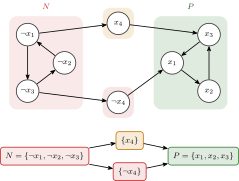
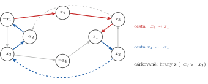
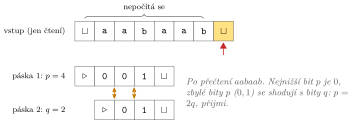
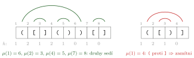

12.7 Úlohy navíc¶
Úlohy procvičují prostorovou složitost: Savitchův algoritmus \(\mathrm{REACH}\) (oddíl 12.2), počítání konfigurací (oddíl 12.1.2), stroje s logaritmickým pracovním prostorem a hádání cest v \(\NL\) (oddíl 12.3, věta 12.12) a implikační graf \(\prob{2-SAT}\)u (oddíl 12.5).
Neoficiální úlohy
Úlohy v tomto oddílu nejsou oficiální zadání předmětu. Jsou to procvičovací úlohy navíc k látce kapitoly; stroje a algoritmy z řešení byly naprogramovány a ověřeny na všech malých vstupech proti definici (nebo hrubé síle), čísla a průběhy výpočtů spočítal program, úloha 12.6 je čistě důkazová.
12.7.1 Rozcvička¶
Úloha 12.1 (REACH na malém grafu)
Orientovaný graf \(G\) má vrcholy \(1,2,3,4\) a hrany \(1\to3\), \(3\to2\), \(2\to4\). Funkci \(\mathrm{REACH}(A,B,t)\) ze Savitchovy věty (algoritmus v oddílu 12.2.2) spouštíme přímo na \(G\): vrcholy hrají roli konfigurací, prostředky se zkoušejí v pořadí \(1,2,3,4\) a pravé volání \(\mathrm{REACH}(C_{\mathrm{mid}},B,\lfloor t/2\rfloor)\) proběhne jen tehdy, když levé vrátilo TRUE.
- Projděte výpočet \(\mathrm{REACH}(1,4,4)\). Která volání s \(t=2\) proběhnou, co vrátí a s jakým prostředkem nakonec uspěje kořen? Kolik volání proběhne celkem?
- Proč \(\mathrm{REACH}(1,4,2)\) vrátí FALSE, přestože se z \(1\) do \(4\) dostat dá?
- Kolik pater má zásobník nejvýše a co na něm leží ve chvíli, kdy se vyhodnocuje \(\mathrm{REACH}(3,2,1)\)?
- Obecně: graf s \(n\) vrcholy je na vstupní pásce jako matice sousednosti a pro dané vrcholy \(u,v\) voláme \(\mathrm{REACH}(u,v,n)\). Odhadněte pracovní prostor.
Řešení
a) Průběh. Kořen \(\mathrm{REACH}(1,4,4)\) zkouší prostředky \(m=1,2,\dots\) a pro každý volá \(\mathrm{REACH}(1,m,2)\) a případně \(\mathrm{REACH}(m,4,2)\). Každé volání s \(t=2\) opět zkouší prostředky a volá základní případy s \(t=1\) (ty jen testují „\(A=B\) nebo hrana \(A\to B\)“).
| volání (\(t=2\)) | zkoušené prostředky a základní případy | výsledek | volání \(t=1\) |
|---|---|---|---|
| \(\mathrm{REACH}(1,1,2)\) (kořen, \(m=1\), vlevo) | \(m'=1\): \((1,1)\) T, \((1,1)\) T | TRUE | 2 |
| \(\mathrm{REACH}(1,4,2)\) (kořen, \(m=1\), vpravo) | \(m'=1\): T, \((1,4)\) F; \(m'=2\): \((1,2)\) F; \(m'=3\): \((1,3)\) T, \((3,4)\) F; \(m'=4\): \((1,4)\) F | FALSE | 6 |
| \(\mathrm{REACH}(1,2,2)\) (kořen, \(m=2\), vlevo) | \(m'=1\): T, \((1,2)\) F; \(m'=2\): \((1,2)\) F; \(m'=3\): \((1,3)\) T, \((3,2)\) T | TRUE | 5 |
| \(\mathrm{REACH}(2,4,2)\) (kořen, \(m=2\), vpravo) | \(m'=1\): \((2,1)\) F; \(m'=2\): \((2,2)\) T, \((2,4)\) T | TRUE | 3 |
Prostředek \(m=1\) tedy selže (pravá polovina vrátí FALSE), prostředek \(m=2\) uspěje a kořen vrátí TRUE. Celkem proběhne \(1+4+16=21\) volání (jedno s \(t=4\), čtyři s \(t=2\) a \(2+6+5+3=16\) s \(t=1\)).
b) \(\mathrm{REACH}(1,4,2)\) se ptá na cestu délky nejvýše 2. Jediná cesta z \(1\) do \(4\) je \(1\to3\to2\to4\) a má délku 3. Proto žádný prostředek \(m'\) nesplní obě poloviny po jednom kroku. (Pro \(t=3\) už \(\mathrm{REACH}(1,4,3)\) vrátí TRUE, přes prostředek \(m'=2\): \(\mathrm{REACH}(1,2,2)\) a \(\mathrm{REACH}(2,4,1)\).)
c) Zásobník. Hodnota \(t\) klesá \(4\to2\to1\), takže jsou nejvýše tři patra (0, 1, 2); patro se základním případem \(t=1\) nemá prostředek. Volání \(\mathrm{REACH}(3,2,1)\) je pravá polovina volání \(\mathrm{REACH}(1,2,2)\) s prostředkem 3, které je levou polovinou kořene s prostředkem 2:
Zásobník v okamžiku volání \(\mathrm{REACH}(3,2,1)\). Hrana \(3\to2\) existuje, volání vrátí TRUE a s ním i \(\mathrm{REACH}(1,2,2)\). Patro 1 se pak smaže a přepíše voláním \(\mathrm{REACH}(2,4,2)\).
d) Prostor obecně. Hodnota \(t\) se v každém zanoření nejvýše půlí (shora zaokrouhleno), z \(t=n\) se k \(t=1\) dostaneme po \(\lceil\log_2n\rceil\) krocích, pater je tedy nejvýše \(\lceil\log_2n\rceil+1\). Patro drží čtyři čísla nejvýše \(n\) (konce \(A,B\), hodnotu \(t\) a prostředek), každé zabere \(\lfloor\log_2n\rfloor+1\) bitů. Základní případ přečte jeden bit matice na pozici \((A-1)n+B\); k přesunu čtecí hlavy stačí konstantně mnoho čítačů s \(O(\log n)\) bity. Celkem
tedy \(\prob{ST-REACH}\in\DSPACE(\log^2n)\) – přesně Savitchova věta pro \(S(n)=\log n\) (věta 12.10). Čas je ovšem obrovský: na každém patře se zkouší \(n\) prostředků.
Úloha 12.2 (implikační graf konkrétní formule)
Je dána formule
- Sestrojte implikační graf \(G_\varphi\).
- Najděte silně souvislé komponenty, kondenzaci a všechna její topologická uspořádání. Podle pravidla \(\tau(x)=1\iff C_{\lnot x}\prec C_x\) (věta 12.16) sestavte splňující ohodnocení a ověřte ho.
- Ukažte, že \(\varphi'=\varphi\land(\lnot x_2\lor\lnot x_3)\) je nesplnitelná, a to dvěma cestami v implikačním grafu.
Řešení
a) Hrany. Klauzule \((\ell_1\lor\ell_2)\) dává hrany \(\lnot\ell_1\to\ell_2\) a \(\lnot\ell_2\to\ell_1\):
| klauzule | hrany |
|---|---|
| \((\lnot x_1\lor x_2)\) | \(x_1\to x_2\), \(\lnot x_2\to\lnot x_1\) |
| \((\lnot x_2\lor x_3)\) | \(x_2\to x_3\), \(\lnot x_3\to\lnot x_2\) |
| \((\lnot x_3\lor x_1)\) | \(x_3\to x_1\), \(\lnot x_1\to\lnot x_3\) |
| \((x_1\lor x_4)\) | \(\lnot x_1\to x_4\), \(\lnot x_4\to x_1\) |
| \((\lnot x_4\lor x_3)\) | \(x_4\to x_3\), \(\lnot x_3\to\lnot x_4\) |
Graf má \(2\cdot4=8\) vrcholů a \(2\cdot5=10\) hran.

Nahoře implikační graf \(G_\varphi\) se silně souvislými komponentami (podbarvené), dole jeho kondenzace. Všimni si: \(\{x_4\}\) a \(\{\lnot x_4\}\) spolu nejsou spojené, proto mají v topologickém uspořádání libovolné pořadí.
b) Komponenty. Hrany \(x_1\to x_2\to x_3\to x_1\) tvoří cyklus, tedy \(P=\{x_1,x_2,x_3\}\) je jedna SCC; zrcadlově (lemma 12.14) \(\lnot x_2\to\lnot x_1\to\lnot x_3\to\lnot x_2\), tedy \(N=\{\lnot x_1,\lnot x_2,\lnot x_3\}\). Z \(x_4\) vede jen hrana do \(x_3\in P\) a z \(P\) se nikam jinam nedostaneme, takže \(x_4\) neleží na žádném cyklu a tvoří komponentu \(\{x_4\}\); stejně \(\{\lnot x_4\}\) (do \(\lnot x_4\) vede jen hrana z \(\lnot x_3\), ven jen do \(x_1\)). Čtyři komponenty, žádná neobsahuje současně \(x_i\) i \(\lnot x_i\), formule je tedy splnitelná.
Kondenzace má hrany \(N\to\{x_4\}\) (z \(\lnot x_1\to x_4\)), \(N\to\{\lnot x_4\}\) (z \(\lnot x_3\to\lnot x_4\)), \(\{x_4\}\to P\) a \(\{\lnot x_4\}\to P\). Topologická uspořádání jsou právě dvě: \(N\prec\{x_4\}\prec\{\lnot x_4\}\prec P\) a \(N\prec\{\lnot x_4\}\prec\{x_4\}\prec P\).
Ohodnocení. Pro \(i=1,2,3\) je \(C_{\lnot x_i}=N\prec P=C_{x_i}\), tedy \(\tau(x_i)=1\) v obou uspořádáních. Pro \(x_4\) záleží na uspořádání: v prvním je \(C_{x_4}\prec C_{\lnot x_4}\), tedy \(\tau(x_4)=0\); ve druhém \(\tau(x_4)=1\). Dostáváme \(\tau=(1,1,1,0)\) a \(\tau=(1,1,1,1)\). Kontrola \((1,1,1,0)\): \((\lnot x_1\lor x_2)=(0\lor1)\), \((\lnot x_2\lor x_3)=(0\lor1)\), \((\lnot x_3\lor x_1)=(0\lor1)\), \((x_1\lor x_4)=(1\lor0)\), \((\lnot x_4\lor x_3)=(1\lor1)\) – vše splněno; pro \((1,1,1,1)\) se změní jen \((x_1\lor x_4)=(1\lor1)\) a \((\lnot x_4\lor x_3)=(0\lor1)\), opět splněno. (Program ověřil, že jiná splňující ohodnocení nejsou.)
c) Nesplnitelnost. Nová klauzule \((\lnot x_2\lor\lnot x_3)\) přidá hrany \(x_2\to\lnot x_3\) a \(x_3\to\lnot x_2\). Pak v \(G_{\varphi'}\) vedou cesty
takže \(x_1\) a \(\lnot x_1\) leží ve stejné SCC. Podle lemmatu 12.15 by každé splňující ohodnocení s \(x_1=1\) mělo i \(\lnot x_1=1\) (první cesta) a každé s \(x_1=0\), tj. \(\lnot x_1=1\), by mělo \(x_1=1\) (druhá cesta). Obě možnosti vedou ke sporu, \(\varphi'\) je nesplnitelná (směr \(\Rightarrow\) věty 12.16).

Implikační graf \(G_{\varphi'}\). Modrá a červená cesta spojují \(x_1\) a \(\lnot x_1\) oběma směry, celý graf je jediná silně souvislá komponenta.
Úloha 12.3 (kolik je konfigurací)
Deterministický stroj \(M\) má vstupní pásku jen pro čtení a jednu pracovní pásku, \(|Q|=10\) stavů, pracovní abecedu \(\Gamma=\{0,1,\triangleright,\blank\}\) a na vstupu délky \(n\) navštíví nejvýše \(S(n)=2\lceil\log_2n\rceil\) buněk pracovní pásky.
- Kolik různých konfigurací může mít \(M\) na vstupu délky \(n=1024\)? Vyjádřete počet i obecně jako funkci \(n\).
- Víme, že \(M\) na každém vstupu zastaví. Kolik nejvýše kroků může na vstupu délky 1024 udělat? Proč?
- Dokažte obecně \(\DSPACE(f(n))\subseteq\DTIME(2^{O(f(n))})\) pro \(f(n)\ge\log n\). Kde se předpoklad \(f(n)\ge\log n\) použije?
- Platí totéž pro nedeterministický stroj, tj. \(\NSPACE(f(n))\subseteq\DTIME(2^{O(f(n))})\)?
Řešení
a) Konfiguraci určuje stav, pozice čtecí hlavy na vstupu (včetně krajních \(\blank\): \(n+2\) možností), pozice hlavy na pracovní pásce (\(S(n)\) možností) a obsah pracovní pásky (\(|\Gamma|^{S(n)}\) možností). Pro \(n=1024=2^{10}\) je \(S(n)=20\) a
Obecně \(4^{2\lceil\log_2n\rceil}\le4^{2\log_2n+2}=16n^4\), tedy \(C(n)=10(n+2)\cdot2\lceil\log_2n\rceil\cdot4^{2\lceil\log_2n\rceil}=O(n^5\log n)\) – polynom, přestože konfigurací je „exponenciálně mnoho vzhledem k prostoru“. (Pro \(n\) mocninu dvojky přesně \(C(n)=20(n+2)\,n^4\log_2n\).)
b) Nejvýše \(C(1024)-1\) kroků. Výpočet je posloupnost konfigurací \(K_0,K_1,K_2,\dots\) Kdyby se některá zopakovala, \(K_i=K_j\) pro \(i<j\), deterministický stroj by z \(K_j\) pokračoval stejně jako z \(K_i\) a opakoval úsek \(K_i,\dots,K_j\) donekonečna – nezastavil by (důsledek 12.6). Zastavující výpočet tedy prochází navzájem různé konfigurace, nejvýše \(C(n)\) kusů, a udělá nejvýše \(C(n)-1\) kroků.
c) Nechť \(M\) rozhoduje \(L\) v prostoru \(c\cdot f(n)\) (s pracovními páskami s abecedou \(\Gamma\), \(k\) pásek). Počet konfigurací je
Každý činitel je \(2^{O(f(n))}\): \(|Q|\) je konstanta, \(cf(n)\le2^{cf(n)}\), \(|\Gamma|^{kcf(n)}=2^{kc\log_2|\Gamma|\cdot f(n)}\) a právě zde potřebujeme \(f(n)\ge\log_2n\), aby \(n+2\le4n\le2^{f(n)+2}\). Tedy \(C(n)=2^{O(f(n))}\) a podle b) stroj \(M\) (rozhoduje, tedy vždy zastaví) udělá nejvýše \(C(n)\) kroků, \(L\in\DTIME(2^{O(f(n))})\). Bez předpokladu by tvrzení neplatilo: jazyk slov nad \(\{0,1\}\) se sudým počtem jedniček rozhodne stroj, který jen přečte vstup a paritu nese ve stavu, tedy leží v \(\DSPACE(1)\). V \(\DTIME(2^{O(1)})=\DTIME(O(1))\) ale není: stroj s konstantním časem \(c\) dojede čtecí hlavou nejvýše o \(c\) buněk, uvidí tedy jen prvních \(c+1\) symbolů vstupu, takže na slovech \(0^{2c}0\) a \(0^{2c}1\) odpoví stejně, přestože první do jazyka patří a druhé ne.
d) Ano. Nedeterministický stroj se může zacyklit v jedné větvi a přijmout v jiné, proto argument z b) nestačí. Postupujeme jako v důkazu \(\NL\subseteq\PP\) (věta 12.10): deterministický simulátor projde graf konfigurací do šířky z počáteční konfigurace a přijme, narazí-li na přijímající konfiguraci. Vrcholů je \(C(n)=2^{O(f(n))}\), z každého vede jen konstantně mnoho hran (podle \(\delta\)), BFS běží v čase polynomiálním v \(C(n)\), tedy \(\bigl(2^{O(f(n))}\bigr)^{O(1)}=2^{O(f(n))}\). (Kvůli zjištění \(f(n)\) a výčtu konfigurací předpokládáme, že \(f\) je prostorově konstruovatelná.)
12.7.2 Na úrovni testu¶
Úloha 12.4 (dva jazyky v logaritmickém prostoru)
Popište deterministické Turingovy stroje se vstupní páskou pouze pro čtení, které rozhodují dané jazyky s pracovním prostorem \(O(\log n)\). Uveďte, co přesně je na pracovních páskách, a zdůvodněte odhad prostoru.
- \(L_1=\{\,w\in\{a,b\}^*\mid \#_a(w)=2\cdot\#_b(w)\,\}\) (např. \(aab\in L_1\), \(abab\notin L_1\), \(\varepsilon\in L_1\)).
- \(L_2\) = správně uzávorkované výrazy nad \(\{(,)\}\), kde \(L_2\) je nejmenší jazyk s \(\varepsilon\in L_2\) a \(u,v\in L_2\Rightarrow(u)v\in L_2\) (např. \((()())\in L_2\), \(())(\notin L_2\)).
Řešení
Model. Vstupní páska se nepočítá, počítají se navštívené buňky pracovních pásek (definice 12.1 a 12.8). Konečně mnoho informace (fáze výpočtu, právě přečtený symbol) nese vnitřní stav.
Binární čítač. Na pracovní pásce je v buňce 0 zarážka \(\triangleright\), za ní bity čísla, nejnižší bit vlevo; číslo 0 je prázdný zápis. Přičtení 1: od nejnižšího bitu přepisuj \(1\to0\) a jdi doprava, první \(0\) nebo \(\blank\) přepiš na \(1\). Odečtení 1 (jen když číslo není 0): přepisuj \(0\to1\), první \(1\) přepiš na \(0\). Test nuly: žádný bit není \(1\). Po každé operaci se hlava vrátí k zarážce. Čítač s hodnotou nejvýše \(N\ge1\) zabere nejvýše \(\lfloor\log_2N\rfloor+1\) bitů.
a) Stroj pro \(L_1\). Dvě pracovní pásky, na pásce 1 čítač \(p\) (počet \(a\)), na pásce 2 čítač \(q\) (počet \(b\)).
- Počítání. Čtecí hlava jde po vstupu zleva doprava; na \(a\) přičti 1 k \(p\), na \(b\) přičti 1 k \(q\).
- Porovnání \(p=2q\). Binárně je \(2q\) zápis \(q\) posunutý o jedno místo: nejnižší bit \(0\), za ním bity \(q\). Obě hlavy postav na první bit. Je-li \(q=0\) (na pásce 2 hned \(\blank\)), přijmi, právě když i \(p=0\). Jinak musí být první bit \(p\) roven \(0\); pak hlavu 1 posuň o jedno místo dál a porovnávej bity obou pásek současně, dokud obě nedojdou na \(\blank\) ve stejném kroku. Při neshodě nebo dřívějším konci jedné pásky zamítni, jinak přijmi.
Proč porovnání funguje. Čítače se jen zvětšují, takže jejich zápis nikdy nemá na konci (v nejvyšším řádu) nulu: nejvyšší bit vznikne přepisem \(\blank\to1\). Dvě čísla se pak rovnají, právě když mají stejný zápis, a zápis \(2q\) pro \(q>0\) je přesně „\(0\) a pak zápis \(q\)“. Krok 1 spočítá \(p=\#_a(w)\) a \(q=\#_b(w)\), krok 2 přijme právě při \(p=2q\).

Stroj z části a) před porovnáním na vstupu \(aabaab\). Pásku 2 jsme nakreslili posunutou o jednu buňku, aby bylo vidět, které bity se porovnávají.
Prostor a). \(p,q\le n\), takže každý čítač má nejvýše \(\lfloor\log_2n\rfloor+1\) bitů a jeho páska zabere nejvýše \(\lfloor\log_2n\rfloor+3\) buněk (zarážka, bity, jedna \(\blank\) za nimi, kterou čte přenos a porovnání). Celkem \(2\lfloor\log_2n\rfloor+6=O(\log n)\) buněk. Jiné údaje se na pracovní pásky nepíšou: pozici ve vstupu určuje čtecí hlava, fázi výpočtu stav.
b) Stroj pro \(L_2\). Jedna pracovní páska s čítačem \(h\) = (počet „(“) \(-\) (počet „)“) v dosud přečtené předponě. Na začátku \(h=0\); na „(“ přičti 1; na „)“ otestuj \(h=0\) – pokud ano, zamítni, jinak odečti 1; na konci vstupu přijmi, právě když \(h=0\).
Správnost b). Označme \(h(k)\) hodnotu po přečtení \(w_1\dots w_k\). Stroj přijme, právě když \(h(k)\ge0\) pro všechna \(k\) a \(h(n)=0\). Ukážeme, že to platí právě pro \(w\in L_2\).
- (\(w\in L_2\Rightarrow\) stroj přijme) Indukcí podle pravidel: pro \(\varepsilon\) platí. Pro \(w=(u)v\) s \(u,v\in L_2\) je uvnitř závorky \(h=1+h_u\ge1\), po „)“ je \(h=0\) a dál \(h=h_v\ge0\) s koncem \(0\).
- (stroj přijme \(\Rightarrow w\in L_2\)) Silnou indukcí podle \(|w|\). Pro \(w=\varepsilon\) platí. Jinak \(w_1=(\) (jinak \(h(1)=-1\)). Nechť \(j\) je první index s \(h(j)=0\) (existuje, \(h(n)=0\)). Protože \(h(j-1)=1\), je \(w_j=)\). Položme \(u=w_2\dots w_{j-1}\) a \(v=w_{j+1}\dots w_n\). Uvnitř \(u\) je \(h\ge1\), tedy výšky \(u\) (o 1 menší) jsou \(\ge0\) a končí 0; výšky \(v\) jsou výšky \(w\) od pozice \(j\), také \(\ge0\) s koncem 0. Podle indukce \(u,v\in L_2\), tedy \(w=(u)v\in L_2\).
Prostor b). \(0\le h\le n\), čítač má nejvýše \(\lfloor\log_2n\rfloor+1\) bitů (odečítání ho neprodlouží), páska zabere nejvýše \(\lfloor\log_2n\rfloor+3=O(\log n)\) buněk. Oba stroje vždy zastaví: vstup se čte jednou a každá operace s čítačem trvá \(O(\log n)\) kroků (čas \(O(n\log n)\)).
Úloha 12.5 (hádání cest: tři problémy v NL)
Graf je na vstupu zadán maticí sousednosti, vrcholy jsou \(1,\dots,n\). Ukažte, že následující problémy leží v \(\NL\): popište nedeterministický algoritmus, co si pamatuje, proč je správný a proč stačí prostor \(O(\log n)\).
- \(\prob{Cycle-Through}\): orientovaný graf \(G\) a vrchol \(v\); leží \(v\) na nějakém orientovaném cyklu?
- \(\prob{Strongly-Connected}\): je orientovaný graf \(G\) silně souvislý (každý vrchol dosažitelný z každého)?
- \(\prob{Non-Bipartite}\): není neorientovaný graf \(G\) bipartitní? Odvoďte z toho, že i \(\prob{Bipartite}\in\NL\).
Řešení
Společný stavební kámen. Hádání cesty z \(a\) do \(b\) (jako u \(\prob{ST-REACH}\), problém 12.9): pamatuj si aktuální vrchol \(c\) (začni \(c:=a\)) a počítadlo \(k\) (začni \(k:=0\)). Dokud \(c\neq b\): je-li \(k=n-1\), zamítni; jinak uhodni vrchol \(c'\), ověř ve vstupu hranu \(c\to c'\) (v matici je to bit na pozici \((c-1)n+c'\), k přesunu hlavy stačí pomocné čítače s \(O(\log n)\) bity), při neexistenci zamítni, jinak \(c:=c'\), \(k:=k+1\). Některá větev dojde do \(b\), právě když v \(G\) vede cesta \(a\leadsto b\): nejkratší cesta má nejvýše \(n-1\) hran a uhodnutá posloupnost je vždy skutečný sled. Každá větev skončí nejvýše po \(n-1\) krocích. Pamatujeme \(a,b,c,k\), tedy čtyři čísla \(\le n\).
a) Uhodni vrchol \(u\) a ověř hranu \(v\to u\); pak uhodni cestu \(u\leadsto v\). Správnost: leží-li \(v\) na cyklu \(v\to u\to\dots\to v\), větev, která uhodne \(u\) a pak zbytek cyklu, přijme (smyčka \(v\to v\) je případ \(u=v\) s cestou délky 0). Naopak přijímající větev našla hranu \(v\to u\) a sled \(u\leadsto v\). Vynecháním opakovaných úseků ze sledu dostaneme cestu \(u\leadsto v\) s navzájem různými vrcholy, v níž je \(v\) jen na konci; spolu s hranou \(v\to u\) je to cyklus přes \(v\). Prostor: \(v,u\) a čtveřice ze stavebního kamene, \(O(\log n)\).
b) Deterministicky projdi všechny dvojice \((a,b)\in\{1,\dots,n\}^2\) (dva čítače) a pro každou nedeterministicky uhodni cestu \(a\leadsto b\); selže-li hádání, větev zamítne. Na konci přijmi. Přijímající větev existuje, právě když pro každou dvojici existuje cesta: je-li graf silně souvislý, větev, která vždy hádá správně, přijme; není-li, pro nějakou dvojici \((a,b)\) cesta není a každá větev u ní zamítne. Prostor: \(a,b,c,k\) – opět konstantně mnoho čísel \(\le n\), tedy \(O(\log n)\). Paměť pro dvojici \((a,b)\) se po jejím vyřízení přepíše další dvojicí.
c) Graf je bipartitní, právě když nemá lichou kružnici. Algoritmus: uhodni vrchol \(v\) a pak choď po hranách (každý krok uhodni souseda a ověř hranu), pamatuj aktuální vrchol \(c\), počet kroků \(k\le n\) a jeho paritu (ve stavu). Po každém kroku nejdřív testuj: je-li \(c=v\) a \(k\) liché, přijmi; teprve potom při \(k=n\) zamítni (lichá kružnice délky přesně \(n\) se tak ještě stihne přijmout).
- Má-li \(G\) lichou kružnici, má délku \(\le n\); větev, která uhodne její vrchol \(v\) a obejde ji, přijme.
- Přijme-li větev, našla uzavřený sled liché délky. Lemma: nejkratší uzavřený sled liché délky je lichá kružnice. Kdyby se v něm (kromě shodného začátku a konce) opakoval vrchol, rozpadl by se v tomto vrcholu na dva kratší uzavřené sledy, jejichž délky mají lichý součet – jeden z nich by byl lichý a kratší, spor. Vrcholy se tedy neopakují a sled délky aspoň 3 (graf nemá smyčky, délka 1 nejde) je kružnice.
Prostor: \(v,c,k\), \(O(\log n)\). Tedy \(\prob{Non-Bipartite}\in\NL\). Jeho doplněk je (až na vstupy, které nejsou zápisem grafu – ty se rozpoznají v logaritmickém prostoru) \(\prob{Bipartite}\), takže \(\prob{Bipartite}\in\coNL=\NL\) podle věty Immermana a Szelepcsényiho (12.12).
Pozor. U b) nejde prostě „uhodnout jednu cestu“: problém se ptá na všechny dvojice, a proto dvojice procházíme deterministicky a hádáme jen uvnitř. U \(\prob{Bipartite}\) se přímé hádání nenabízí: přirozený certifikát odpovědi ANO je 2-obarvení s \(n\) bity, a to se do logaritmického prostoru nevejde; proto oklika přes doplněk a \(\NL=\coNL\).
Úloha 12.6 (co plyne z hierarchie a ze Savitche)
O každém tvrzení rozhodněte, zda je pravdivé, nepravdivé, nebo zda to dnes nevíme. Odpověď zdůvodněte větami z kapitoly.
- \(\NSPACE(n^2)\subseteq\DSPACE(n^4)\).
- \(\NSPACE(n^2)\subsetneq\DSPACE(n^5)\).
- \(\DSPACE(n)\subsetneq\DSPACE(2n)\).
- \(\NL\subsetneq\PSPACE\).
- Pokud \(\PP=\NL\), pak \(\PP\neq\PSPACE\).
- \(\LL\subsetneq\PP\).
- Platí \(\PP\subsetneq\PSPACE\) nebo \(\PSPACE\subsetneq\EXP\) (aspoň jedno).
- \(\NSPACE(n)\subseteq\DSPACE(n)\).
Řešení
- Pravda. Savitchova věta (12.7) pro \(S(n)=n^2\) (prostorově konstruovatelná, \(\ge\log n\)): \(\NSPACE(n^2)\subseteq\DSPACE\bigl((n^2)^2\bigr)=\DSPACE(n^4)\).
- Pravda. Podle 1. je \(\NSPACE(n^2)\subseteq\DSPACE(n^4)\) a podle prostorové hierarchie (12.3, \(n^4=o(n^5)\)) je \(\DSPACE(n^4)\subsetneq\DSPACE(n^5)\). Jazyk z \(\DSPACE(n^5)\setminus\DSPACE(n^4)\) tedy v \(\NSPACE(n^2)\) není.
- Nepravda. \(\DSPACE(S(n))\) obsahuje problémy řešitelné v prostoru \(O(S(n))\) (definice 12.1), a \(O(n)=O(2n)\), takže \(\DSPACE(n)=\DSPACE(2n)\). Hierarchie se nepoužije, protože \(n\neq o(2n)\).
- Pravda. \(\NL\subseteq\DSPACE(\log^2n)\) (věta 12.10, tj. Savitch) a \(\log^2n=o(n)\), tedy podle hierarchie \(\DSPACE(\log^2n)\subsetneq\DSPACE(n)\subseteq\PSPACE\).
- Pravda. Z \(\PP=\NL\) a bodu 4 plyne \(\PP=\NL\subsetneq\PSPACE\).
- Nevíme. Víme jen \(\LL\subseteq\NL\subseteq\PP\). Prostorová hierarchie porovnává prostor s prostorem a \(\PP\) je časová třída; \(\PP\subseteq\PSPACE\) a \(\LL\subsetneq\PSPACE\) nevylučují ani \(\LL=\PP\), ani \(\LL\neq\PP\).
- Pravda. Časová hierarchie (věta 3.7) dává \(\PP\subsetneq\EXP\). Kdyby \(\PP=\PSPACE\) i \(\PSPACE=\EXP\), bylo by \(\PP=\EXP\) – spor. Nevíme ale, která z obou inkluzí je ostrá.
- Nevíme. Savitch dává jen \(\NSPACE(n)\subseteq\DSPACE(n^2)\); zda lze nedeterminismus v lineárním prostoru odstranit bez ztráty, je otevřený problém (nad rámec přednášky: tzv. problém LBA). Pozor, že nejde o \(\NL\) vs. \(\coNL\) – uzavřenost na doplněk (Immerman–Szelepcsényi) je jiná otázka.
12.7.3 Těžší úlohy¶
Úloha 12.7 (dva druhy závorek v L)
Nechť \(D\) je jazyk správně uzávorkovaných výrazů se dvěma druhy závorek: nejmenší jazyk nad \(\{(,),[,]\}\) s \(\varepsilon\in D\) a \(u,v\in D\Rightarrow(u)v\in D\) a \([u]v\in D\). Např. \(([]())[]\in D\), ale \(([)]\notin D\). Popište deterministický stroj se vstupní páskou jen pro čtení, který rozhoduje \(D\) v pracovním prostoru \(O(\log n)\), a dokažte jeho správnost.
Řešení
Myšlenka. Zásobník (obvyklé řešení) může mít hloubku \(\Theta(n)\), ten si dovolit nemůžeme. Místo toho pro každou otevírací závorku dopočítáme, kde je její párová závorka – stačí na to čítač hloubky – a zkontrolujeme, že je stejného druhu. Mezivýsledky zapomínáme, prostor recyklujeme.
Značení. Pro \(w=w_1\dots w_n\) nechť \(h(k)\) je (počet otevíracích) \(-\) (počet zavíracích) závorek v \(w_1\dots w_k\) bez ohledu na druh, \(h(0)=0\). Pro otevírací závorku na pozici \(i\) definujeme párovou pozici \(\mu(i)=\min\{\,j>i\mid h(j)=h(i-1)\,\}\).
- Fáze 1 (tvar bez ohledu na druh). Stroj z úlohy 12.4 b), kde „(“ i „[“ počítáme jako otevírací a „)“ i „]“ jako zavírací: ověří \(h(k)\ge0\) pro všechna \(k\) a \(h(n)=0\), jinak zamítne.
- Fáze 2 (druhy). Pro \(i=1,2,\dots,n\) (čítač \(i\)): přesuň čtecí hlavu na pozici \(i\) (hlavu na levý okraj, do pomocného čítače \(c\) zkopíruj \(i\), posouvej doprava a odečítej, dokud \(c\neq0\)). Je-li \(w_i\) zavírací, pokračuj dalším \(i\). Je-li otevírací, zapamatuj si ve stavu její druh, nastav \(d:=1\) a jdi doprava: otevírací závorka \(d:=d+1\), zavírací \(d:=d-1\), dokud není \(d=0\). Hlava teď stojí na \(\mu(i)\) (po fázi 1 tato pozice existuje). Není-li tam zavírací závorka téhož druhu, zamítni.
- Prošla-li všechna \(i\), přijmi.
Pro \(i\) s otevírací závorkou je \(h(i)=h(i-1)+1\) a \(h\) se mění po \(\pm1\), takže čítač \(d\) na pozici \(j\) má hodnotu \(h(j)-h(i-1)\) a poprvé klesne na \(0\) právě v \(\mu(i)\); mezi \(i\) a \(\mu(i)\) je \(h>h(i-1)\) a \(w_{\mu(i)}\) je zavírací. Fáze 1 zaručí, že \(\mu(i)\) existuje (\(h(n)=0\le h(i-1)\)).

Párové pozice \(\mu(i)\) na slovech \(([]())[]\) a \(([)]\). Fáze 1 projde u obou (\(h\ge0\), konec 0); slovo \(([)]\) zamítne až fáze 2.
Správnost: stroj přijme \(\iff\) \(w\in D\).
- (\(\Leftarrow\)) Indukcí podle pravidel. Pro \(\varepsilon\) platí. Nechť \(w=(u)v\) nebo \(w=[u]v\) s \(u,v\in D\). Fáze 1 projde (jazyk bez ohledu na druhy je \(L_2\) z úlohy 12.4 a pravidla se přenesou). V \(w\) je \(h=1+h_u\ge1\) uvnitř závorky a \(h=0\) hned za ní, takže \(\mu(1)=|u|+2\) a druh sedí. Pro otevírací závorku uvnitř \(u\) se \(h\) liší od \(h_u\) o konstantu 1 a \(u\) se vrací na svou výšku 0 nejpozději na svém konci, takže \(\mu\) v \(w\) je párová pozice v \(u\) (posunutá o 1) a druhy sedí podle indukce. Pro \(v\) je \(h\) od pozice \(|u|+2\) přesně \(h_v\), párové pozice jsou tytéž. Fáze 2 projde.
- (\(\Rightarrow\)) Silnou indukcí podle \(|w|\). Pro \(w=\varepsilon\) platí. Jinak je \(w_1\) otevírací (fáze 1) a \(j=\mu(1)\) je první index s \(h(j)=0\). Podle fáze 2 je \(w_1w_j\) buď \(()\), nebo \([]\). Položme \(u=w_2\dots w_{j-1}\), \(v=w_{j+1}\dots w_n\). Stejně jako v úloze 12.4 b) splňují \(u\) i \(v\) podmínky fáze 1. Pro otevírací závorku na pozici \(i\in[2,j-1]\) je \(h(i-1)\ge1=h(j-1)\), takže \(\mu(i)\le j-1\) leží uvnitř \(u\) a je to párová pozice v \(u\); pro pozice v \(v\) je \(h\) totéž jako v \(v\). Fáze 2 tedy projde i pro \(u\) a \(v\), podle indukce \(u,v\in D\) a \(w=(u)v\) nebo \([u]v\) leží v \(D\).
Prostor. Na pracovní pásce jsou čtyři binární čítače: \(h\) (fáze 1), \(i\), \(c\) a \(d\) (fáze 2), všechny s hodnotou nejvýše \(n+1\), tedy každý nejvýše \(\lfloor\log_2(n+1)\rfloor+1\) bitů. Druh závorky a fáze jsou ve stavu. Celkem \(O(\log n)\), \(D\in\LL\). Stroj vždy zastaví (každá smyčka je řízena čítačem), čas je polynomiální, řádově \(n^2\log n\).
Úloha 12.8 (vynucený literál ve 2-SAT)
(nad rámec přednášky) Je dána formule \(\varphi\) v 2-CNF a literál \(\ell\). Říkáme, že \(\ell\) je vynucený, pokud \(\ell=1\) v každém splňujícím ohodnocení \(\varphi\) (u nesplnitelné \(\varphi\) je vynucený každý literál).
- Dokažte: je-li \(\varphi\) splnitelná, je \(\ell\) vynucený, právě když v \(G_\varphi\) vede cesta \(\lnot\ell\leadsto\ell\).
- Ukažte, že problém „je \(\ell\) vynucený?“ leží v \(\NL\).
- Které literály jsou vynucené ve formuli \(\varphi\) z úlohy 12.2?
Řešení
a) (\(\Leftarrow\)) Vede-li cesta \(\lnot\ell\leadsto\ell\) a ohodnocení \(\tau\) splňuje \(\varphi\) s \(\tau(\ell)=0\), pak \(\tau(\lnot\ell)=1\) a podle lemmatu 12.15 i \(\tau(\ell)=1\) – spor. Tento směr platí i bez předpokladu splnitelnosti.
a) (\(\Rightarrow\)) Obměnou: nechť \(\varphi\) je splnitelná a cesta \(\lnot\ell\leadsto\ell\) nevede. Ukážeme, že \(\varphi'=\varphi\land(\lnot\ell)\) je splnitelná; její splňující ohodnocení splňuje \(\varphi\) a má \(\ell=0\), takže \(\ell\) není vynucený. Jednoliterálová klauzule \((\lnot\ell)\) přidá do grafu jedinou hranu \(\ell\to\lnot\ell\) (oddíl 12.5.2). Pozorování: vede-li v \(G_{\varphi'}\) cesta \(a\leadsto b\), která novou hranu používá, pak v \(G_\varphi\) vedou cesty \(a\leadsto\ell\) (úsek před prvním použitím) a \(\lnot\ell\leadsto b\) (úsek po posledním použitím).
Předpokládejme pro spor, že \(\varphi'\) je nesplnitelná. Podle věty 12.16 existuje \(y\) s cestami \(y\leadsto\lnot y\) a \(\lnot y\leadsto y\) v \(G_{\varphi'}\). Obě nemohou ležet v \(G_\varphi\), protože \(\varphi\) je splnitelná. Rozebereme zbylé případy:
- Obě cesty používají novou hranu: v \(G_\varphi\) jsou \(y\leadsto\ell\), \(\lnot\ell\leadsto\lnot y\), \(\lnot y\leadsto\ell\), \(\lnot\ell\leadsto y\); pak \(\lnot\ell\leadsto y\leadsto\ell\) v \(G_\varphi\).
- Jen \(y\leadsto\lnot y\) ji používá: v \(G_\varphi\) jsou \(y\leadsto\ell\), \(\lnot\ell\leadsto\lnot y\) a \(\lnot y\leadsto y\); pak \(\lnot\ell\leadsto\lnot y\leadsto y\leadsto\ell\).
- Jen \(\lnot y\leadsto y\) ji používá: v \(G_\varphi\) jsou \(\lnot y\leadsto\ell\), \(\lnot\ell\leadsto y\) a \(y\leadsto\lnot y\); pak \(\lnot\ell\leadsto y\leadsto\lnot y\leadsto\ell\).
Vždy vede v \(G_\varphi\) cesta \(\lnot\ell\leadsto\ell\), což je spor s předpokladem. Tedy \(\varphi'\) je splnitelná.
b) Podle a) je \(\ell\) vynucený, právě když \(\varphi\) je nesplnitelná nebo vede cesta \(\lnot\ell\leadsto\ell\) (směr \(\Leftarrow\) platí vždy, směr \(\Rightarrow\) pro splnitelnou \(\varphi\), a nesplnitelná dává ANO). Nedeterministický algoritmus nejprve uhodne, kterou možnost ověří:
- Nesplnitelnost: algoritmus pro \(\prob{2-UNSAT}\) z oddílu 12.5.3 (uhodni \(x\), cesty \(x\leadsto\lnot x\) a \(\lnot x\leadsto x\)).
- Cesta: uhodni cestu \(\lnot\ell\leadsto\ell\) krok po kroku, pamatuj aktuální literál a počítadlo \(\le2n\); hranu \(a\to b\) ověř ve vstupu (existuje klauzule \((\lnot a\lor b)\)?).
Přijímající větev existuje, právě když platí aspoň jedna možnost. Pamatujeme konstantně mnoho literálů a čítačů, každý \(O(\log n)\) bitů, tedy problém je v \(\NL\). Ověřovat zvlášť, že \(\varphi\) je splnitelná, nepotřebujeme.
c) Ve \(\varphi\) z úlohy 12.2 vedou cesty
takže \(x_1,x_2,x_3\) jsou vynucené. Z \(\lnot x_4\) se dostaneme jen do \(\{\lnot x_4,x_1,x_2,x_3\}\) a z \(x_4\) jen do \(\{x_4,x_3,x_1,x_2\}\), takže ani \(x_4\), ani \(\lnot x_4\) vynucený není. To souhlasí s b) úlohy 12.2: splňující ohodnocení jsou právě \((1,1,1,0)\) a \((1,1,1,1)\). Literály \(\lnot x_1,\lnot x_2,\lnot x_3\) vynucené nejsou (cesta \(x_i\leadsto\lnot x_i\) nevede, z \(P\) se nikam nedostaneme).